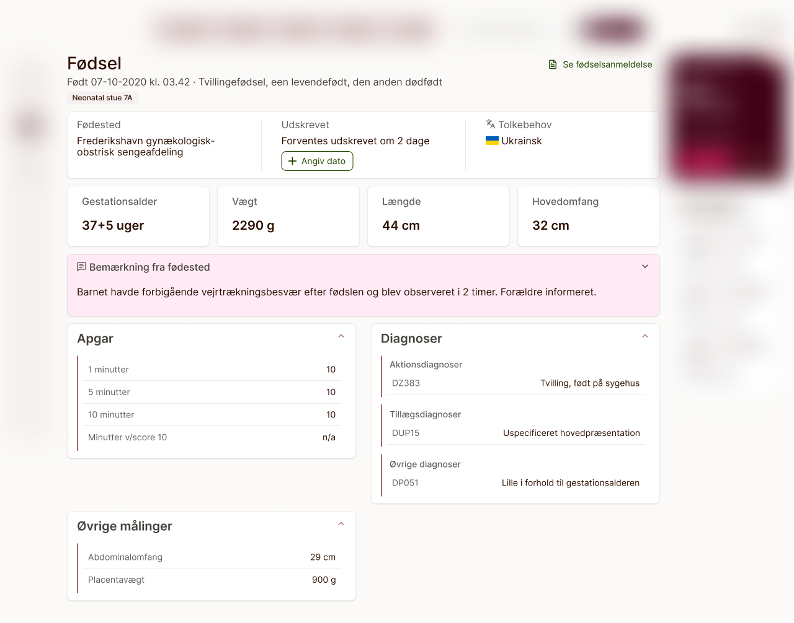
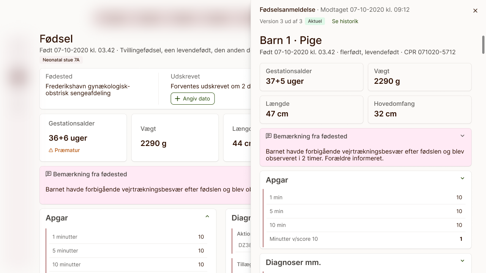
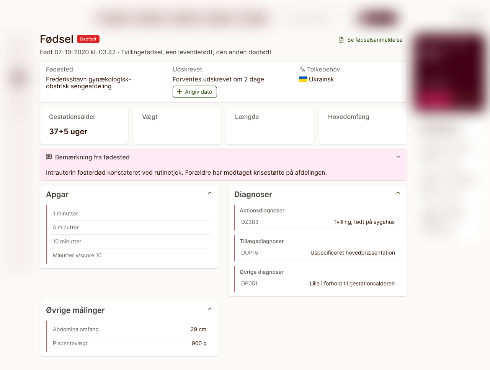
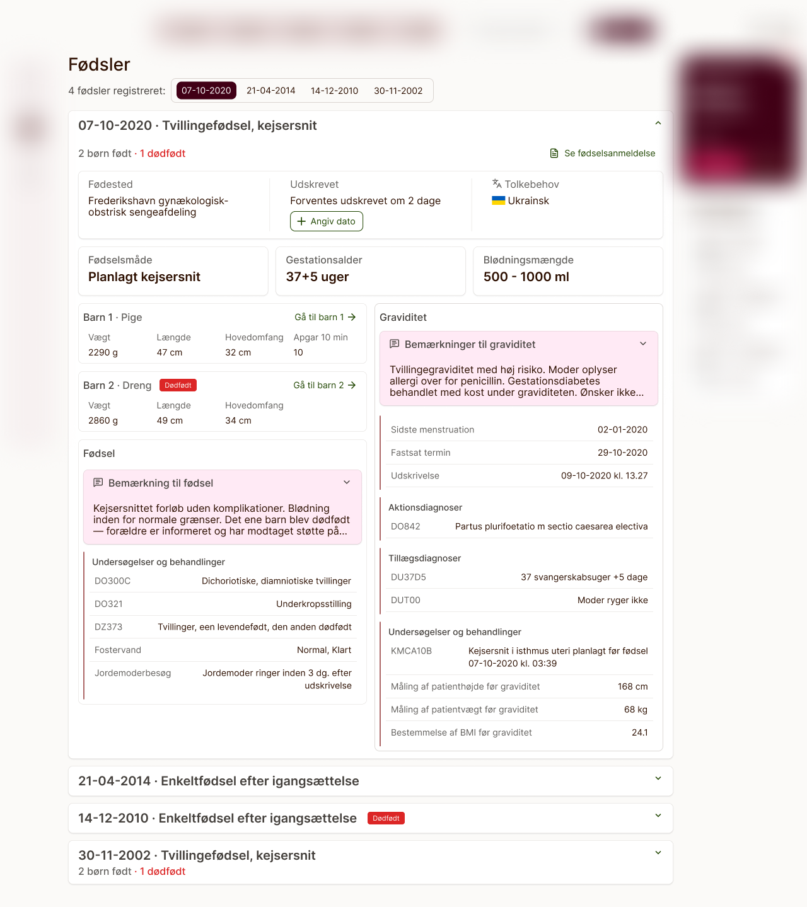
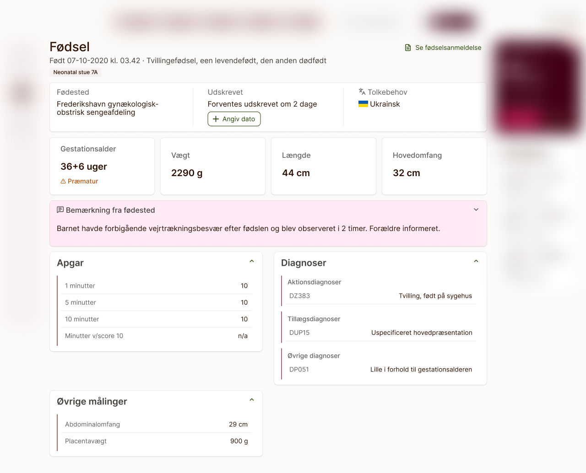
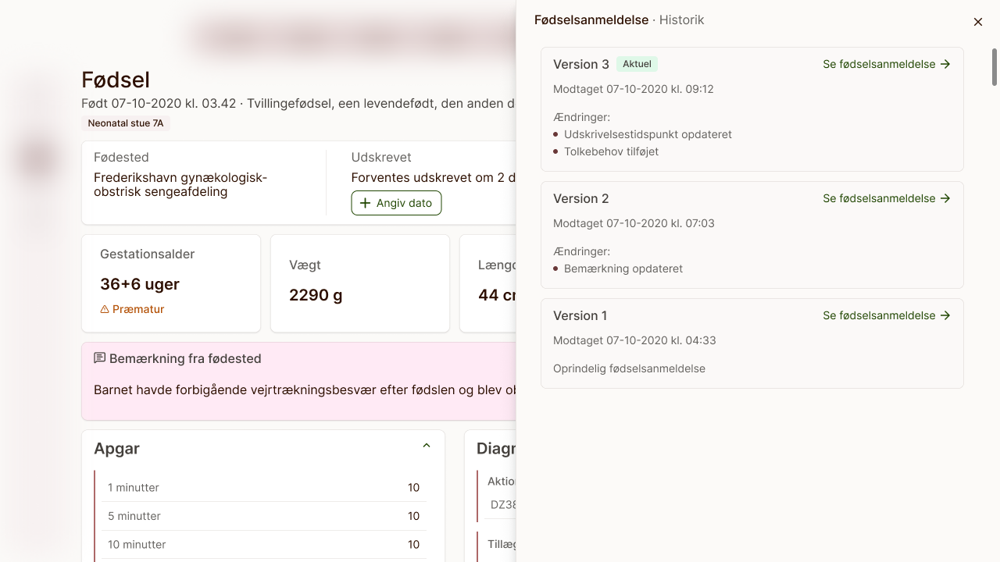

Redesigning how Denmark's official birth notification (fødselsanmeldelse) is split across the mother's and the child's medical record at Novax — so each surfaces exactly what's clinically relevant, without losing access to the full notification. Redesign af hvordan den officielle danske fødselsanmeldelse opdeles mellem mors og barnets journal hos Novax — så hver journal viser præcis det, der er klinisk relevant, uden at miste adgang til hele anmeldelsen.

Every birth in Denmark is followed by an official birth notification — a fødselsanmeldelse — submitted by the hospital, covering everything from the child's measurements to the mother's delivery details. In Novax's existing system, all of that data lived in exactly one place: the child's journal. That worked for data that belonged to the child, but a large share of the notification — gestational age, mode of delivery, blood loss, complications — is just as relevant to the mother's care. A health visitor working from the mother's record had no way to see any of it without leaving her journal to search for the child's instead. Enhver fødsel i Danmark efterfølges af en officiel fødselsanmeldelse, som hospitalet indsender, og som dækker alt fra barnets mål til mors fødselsforløb. I Novax' eksisterende system lå alle disse data ét sted: barnets journal. Det fungerede fint for data, der hørte til barnet, men en stor del af anmeldelsen — gestationsalder, fødselsmåde, blødningsmængde, komplikationer — er lige så relevant for plejen af moren. En sundhedsplejerske, der arbejdede i mors journal, havde ingen mulighed for at se noget af det uden at forlade journalen for i stedet at søge det frem i barnets.
My task was to redesign how this data reached its readers: split it sensibly across both journals, and keep the complete, unedited notification available from either side. Nothing in a legal health record can be hidden — only presented in a way that helps the right person find the right thing faster. Min opgave var at redesigne, hvordan disse data når frem til sundhedsplejersken: fordele dem fornuftigt mellem de to journaler og samtidig holde hele den uredigerede fødselsanmeldelse tilgængelig fra begge sider. Intet i en lovpligtig sundhedsjournal må skjules — men det kan præsenteres på en måde, der hjælper den brugeren med at finde den rette information hurtigere.
The notification form covers dozens of fields, from routine measurements to free-text clinical remarks. Before I could design a single screen, I had to work through the entire dataset and decide, field by field, whether it belonged on the child's journal, the mother's, or both — and within each, whether it needed to be visible at a glance or could sit one tap deeper in the full notification. Anmeldelsesskemaet dækker et hav af felter, fra rutinemæssige målinger til kliniske fritekstbemærkninger. Før jeg kunne designe et eneste skærmbillede, måtte jeg gennemgå hele datasættet og felt for felt afgøre, om det hørte hjemme i barnets journal, mors, eller begge — og for hvert felt, om det skulle være synligt med det samme, eller om det kunne ligge ét klik dybere i den fulde anmeldelse.
I did this together with one of our implementation consultants — a former health visitor (sundhedsplejerske) who now works close to the system's day-to-day users. Her sense of what a health visitor actually reaches for first, versus what's just formally part of the record, shaped how we prioritized and highlighted data in the layout. Det gjorde jeg sammen med en af vores implementeringskonsulenter — en tidligere sundhedsplejerske, som i dag arbejder tæt på systemets daglige brugere. Hendes fornemmelse for, hvad en sundhedsplejerske faktisk griber efter først, i modsætning til hvad der blot formelt er en del af journalen, formede, hvordan vi prioriterede og fremhævede data i layoutet.

A birth notification is two distinct records folded into one. By curating key data specifically for the mother and the child, health visitors get an immediate overview without the cognitive overload. En fødselsanmeldelse er to forskellige journaler foldet sammen til én. Ved at udvælge nøgledata specifikt til mor og barn får sundhedsplejersker et øjeblikkeligt overblik uden den kognitive overbelastning.
The final design keeps the full birth notification intact and accessible from both journals, but leads with a curated, role-specific view on each side: Det endelige design holder den fulde fødselsanmeldelse intakt og tilgængelig fra begge journaler, men lægger ud med en udvalgt, rollespecifik visning på hver side:
Gestational age and the child's core measurements — weight, length, head circumference — are surfaced immediately, with a clear marker when a birth was premature. Stillbirths get the strongest treatment of all: an unmissable flag at the top of the record, since it changes how staff should read everything else on the page. Gestationsalder og barnets centrale mål — vægt, længde, hovedomkreds — vises med det samme, med en tydelig markering, hvis fødslen var for tidlig. Dødfødsler får en markant markering: et tag øverst i journalen, der er umuligt at overse, fordi det ændrer, hvordan personalet skal læse resten af siden.

Gestational age reappears here alongside mode of delivery and blood loss volume — the details a health visitor needs to assess the mother's own recovery, without cross-referencing the child's record. The birthing method is surfaced to give the health visitor immediate context of the birth. Gestationsalder går igen her sammen med fødselsmåde og blødningsmængde — de detaljer en sundhedsplejerske skal bruge for at vurdere mors eget forløb, uden at skulle slå op i barnets journal. Fødselsmåden vises tydeligt, så sundhedsplejersken straks har konteksten for fødslen.

Across both views, clinical remarks are pulled out and visually highlighted rather than left in the general data table — they're free text, and free text is exactly where critical information tends to hide. Birth location, interpreter needs, and discharge date were moved to the top of both journals too: none of them are complex data, but all three are the kind of fact a clinician needs in the first five seconds, not the fifth scroll. I begge visninger bliver kliniske bemærkninger trukket ud og fremhævet visuelt i stedet for at blive gemt i den generelle datatabel — de er fritekst, og fritekst er netop, hvor kritisk information har en tendens til at gemme sig. Fødested, tolkebehov og udskrivelsesdato er også flyttet op øverst i begge journaler: ingen af dem er komplekse data, men alle tre er den slags fakta, en kliniker skal bruge i de første fem sekunder — ikke efter femte scroll.

A birth notification can also be corrected or added to after the fact, so the full notification view needed more than just its current numbers — it needed a history. The expanded view lays out every change with when it happened and what it replaced, so staff can trust the story behind the record, not just its latest state. En fødselsanmeldelse kan også rettes eller suppleres efterfølgende, så den fulde anmeldelsesvisning skulle vise mere end blot de aktuelle tal — den skulle have en historik. Den udvidede visning lægger hver ændring frem med, hvornår den skete, og hvad den erstattede, så personalet kan stole på historien bag journalen, ikke kun dens seneste tilstand.

The design was reviewed and approved by the product owner — fully specced and ready to move into development. More than the specific layout, the part of this project I'd carry forward is the process: sitting down with someone who has actually stood in a delivery ward grounded the decision-making in real users' needs and strengthened the final design. Designet blev gennemgået og godkendt af product owneren — fuldt specificeret og klar til udvikling. Mere end det konkrete layout er det processen fra dette projekt, jeg tager med mig videre: at sætte sig sammen med en, der rent faktisk har stået på en fødegang, forankrede beslutningerne i de virkelige brugeres behov og styrkede det endelige design.